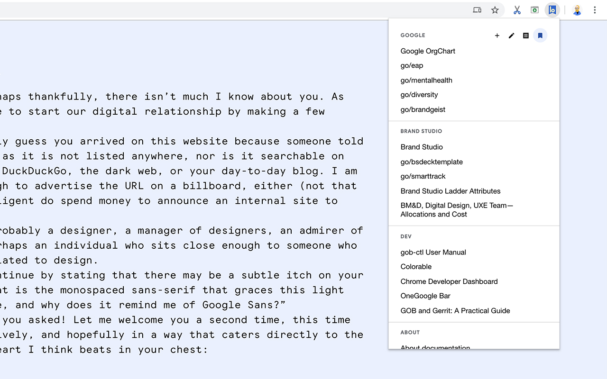
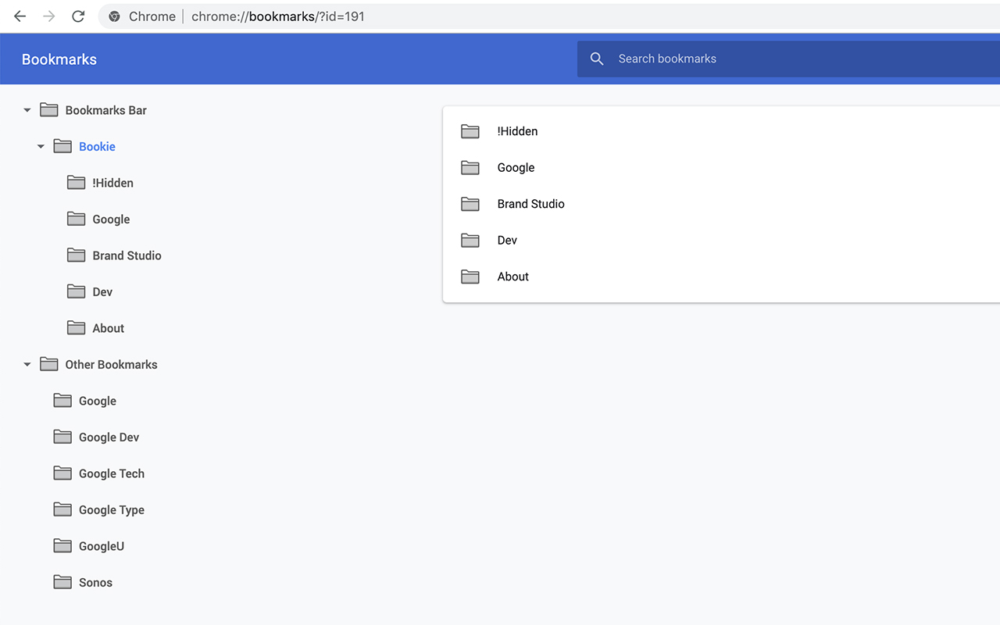
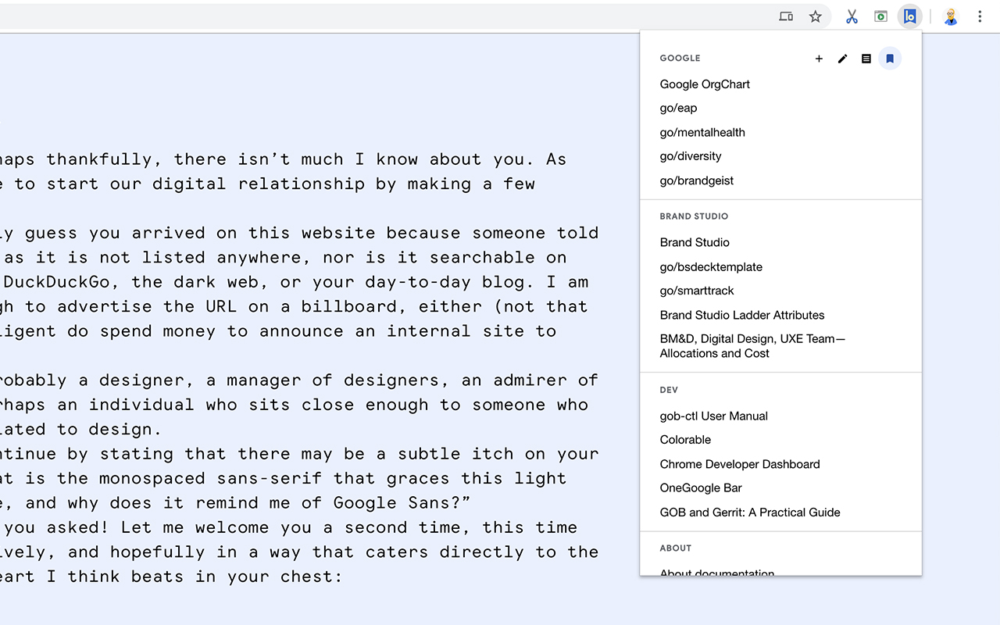
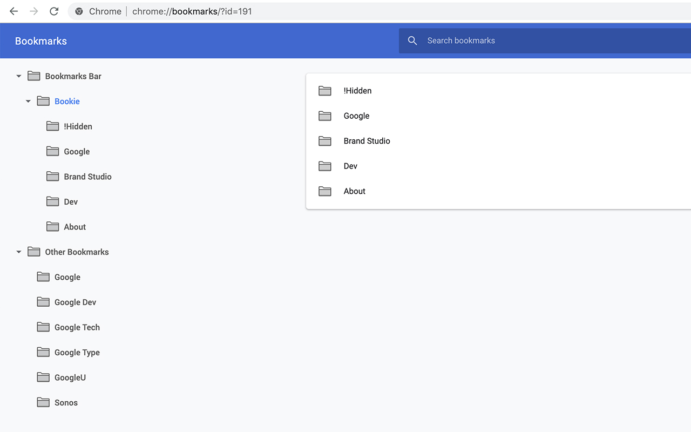
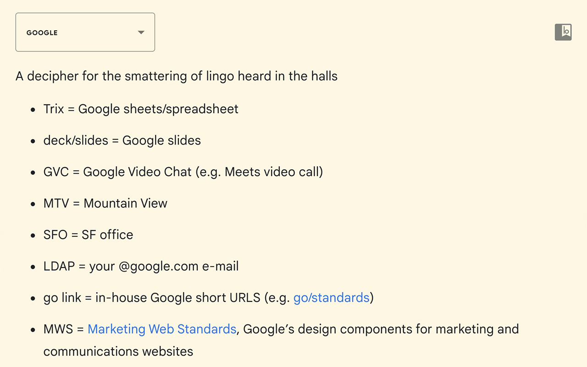
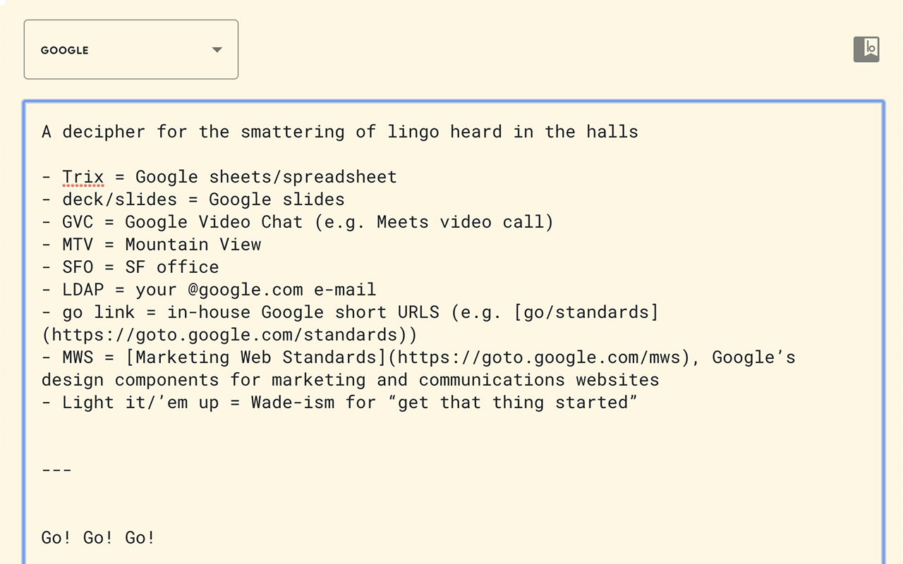

Bookie is a Chrome Extension that makes a curated set of bookmarks and additional notes accessible within the Chrome menubar.

Adds bookmarks.

Remove item from group.
Add/edit notes with Markdown.
Organize within Chrome bookmarks native UI.

Manage bookmarks
Bookmarks can be added easily within the menu, and will automatically populate with info from the current tab (e.g. title and URL).

 Removing bookmarks can also be handled inline.
Removing bookmarks can also be handled inline.

 The bookmarks within Bookie are simply Chrome bookmarks stored in a folder called “Bookie”. You can manage the entries for Bookie within the menu itself (via edit and add options) or simply through the native Chrome bookmarks UI.


The bookmarks within Bookie are simply Chrome bookmarks stored in a folder called “Bookie”. You can manage the entries for Bookie within the menu itself (via edit and add options) or simply through the native Chrome bookmarks UI.


Notes You can also add additional notes to accompany each category, these notes are stored within local storage and are accessible by you. But they will sync across all devices when logged into Chrome.  Markdown Formatting of notes is handled with markdown, simply clicking on the text box exposes the underlying markdown. Bookie's notes support markdown's syntax as well as some additional custom tags.  Smart-ish copy and paste Copied HTML or Rich Text is automatically converted to Markdown when pasted. Below is an example of the rich formatting available for notes, simply click on this text box to reveal the "source" markdown.